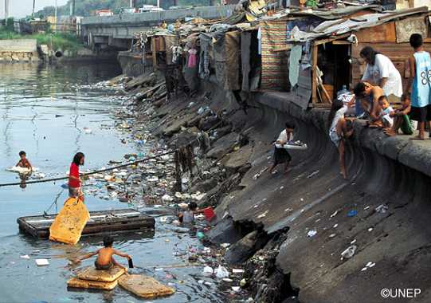
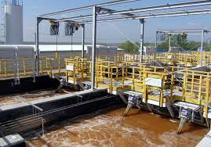
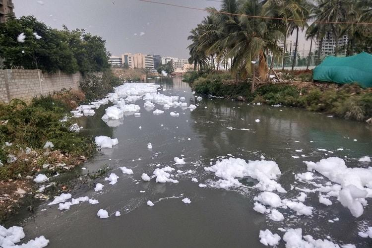

Water Wastage
Defenition : The excessive use of water or the failure to beneficially use abstracted water, and includes water spilled from conveyors or installations due to breakage or poor maintenance
Life without water is impossible.
Save water. Save life. With every little drop, a day less to live on Earth.
-
A person wastes 0-45 Litres per day
-
1.7 trillion gallons of water is wasted every year
-
Russia is the highest 71 trillion gallons/year wastage of water
Sources of water wastage :
Mass Water Wastage :
Types of water Wastages :
-

Domestic Sewage
-

Industrial Sewage
-

Storm Sewage
Acts came up for the Wastage of Water :
In 1974 - The Water (Prevention and Control of Pollution) Act establishes an institutional structure for preventing and abating water pollution. It establishes standards for water quality and effluent. Polluting industries must seek permission to discharge waste into effluent bodies.
List of Water Wastage :
We can mainly divide the Water Wastage into four types which are
-
Physical Losses
-
Distribution Losses
- Over use
-
Inefficient appliances
Physical Losses
Physical losses of water wastage occur due to leaks, bursts, and other problems in water supply systems, such as distri
bution networks, storage tanks, and pipelines. These losses are often difficult to detect and can lead to significant w
ater wastage over time. Physical losses can occur due to aging infrastructure, inadequate maintenance, and inadequate in
vestment in water supply systems. In addition, natural disasters, such as earthquakes and floods, can also cause physical
losses of water by damaging water supply systems.
To reduce physical losses of water, it is essential to invest in water supply infrastructure and ensure that it
is well-maintained. Regular inspection and repair of water supply systems can help to identify and fix leaks and other
problems promptly, reducing physical losses of water. The use of modern technologies, such as sensors and monitoring
systems, can also help to detect and locate leaks more quickly and accurately, allowing for prompt repairs. In addition,
investments in water supply systems, such as the construction of new pipelines and storage tanks, can help to improve
water supply and reduce physical losses of water. By reducing physical losses of water, we can conserve water resources,
improve water supply, and ensure that water is available for future generations.
Distribution Losses
Distribution losses are a significant contributor to water wastage, and they occur during the transportation of water
from the treatment plant to the consumers. These losses can occur due to various reasons, including leakage in the
distribution network, illegal connections, metering inaccuracies, and water theft. Leakage in the distribution network
is the most common cause of distribution losses and can be caused by corrosion, age, and poor maintenance of the pipelines.
Illegal connections to the water supply network are also a significant cause of distribution losses. These connections can be made by individuals who do not have a legitimate water supply or who want to avoid paying for the water they use. Metering inaccuracies are also a cause of distribution losses. Inaccurate or faulty water meters can overstate or understate the amount of water used, leading to either over-billing or under-billing of customers. Finally, water theft is another cause of distribution losses, which occurs when individuals illegally tap into the water supply or use water without paying for it.
Reducing distribution losses is essential to conserve water resources and ensure sustainable water management. Repairing leaks
in the distribution network, improving meter accuracy, implementing effective billing and collection systems, and addressing illegal
connections and water theft are some of the measures that can be taken to reduce distribution losses. In addition, proper planning,
design, and maintenance of the distribution network can help to minimize distribution losses and ensure that water is distributed
efficiently and equitably to consumers. It is crucial to implement these measures to ensure that water resources are used efficiently
and effectively, and that they are available for future generations.
Over use
Overuse of water is another significant cause of water wastage. This occurs when people use more water than they need or
waste water by engaging in practices that are not water-efficient. Examples of overuse of water include leaving taps runn
ing, taking long showers, and using high volumes of water for tasks that require less. In agriculture, overuse of water can
occur when crops are irrigated excessively or when irrigation systems are not designed or operated efficiently. Overuse of
water can lead to a depletion of water resources, especially in areas that are already experiencing water scarcity. It can
also lead to increased water bills, which can have a significant impact on households and businesses.
To reduce overuse of water, it is essential to adopt water-efficient practices and technologies. Water-efficient tec
hnologies, such as low-flow showerheads, aerators, and water-saving toilets, can significantly reduce water use in households
and businesses. In agriculture, efficient irrigation systems, such as drip irrigation and sprinkler systems, can help to re
duce overuse of water. Education and awareness-raising campaigns can also help to encourage people to adopt water-efficient
practices, such as turning off taps when not in use, fixing leaks promptly, and using water-efficient appliances. By reduc
ing overuse of water, we can conserve water resources, reduce water bills, and ensure that water is available for future g
enerations.
Inefficient appliances
Inefficient appliances are another significant source of water wastage. Appliances such as washing machines, dishwashers,
and toilets that are old or not designed to be water-efficient can consume large amounts of water. For example, older wash
ing machines may use up to 40 gallons of water per load, while newer, more water-efficient models may use as little as 15
gallons per load. Similarly, older toilets may use up to 7 gallons of water per flush, while newer, more water-efficient
models may use as little as 1.28 gallons per flush. Inefficient appliances can also cause leaks, which can result in
significant water wastage over time.
To reduce water wastage due to inefficient appliances, it is essential to replace old, inefficient appliances with newer,
more water-efficient models. Water-efficient appliances are designed to use less water while still providing the same level of performance.
In addition to reducing water wastage, water-efficient appliances can also help to lower water bills and reduce energy consumption.
Regular maintenance of appliances can also help to identify and fix leaks promptly, preventing further water wastage. By replacing old,
inefficient appliances with water-efficient models and ensuring that appliances are well-maintained, we can significantly reduce water
wastage in households and businesses.
Control Measures of Water Wastage
Since we have understood the concept of water wastage , let us look into some of the actions taken to control water wastage. Prevention and control of water wastage could be done in so many ways.Some important points are summarized below.
List of Measures :
- Fixing leaks and reducing physical losses : Water supply systems should be regularly inspected and maintained to identify and fix leaks and other problems. The use of modern technologies such as sensors and monitoring systems can also help to detect and locate leaks more quickly and accurately, allowing for prompt repairs.
- Water conservation education and awareness - Education and awareness campaigns can help to promote water conservation practices and encourage individuals and businesses to reduce water consumption.
-
Use of water-efficient appliances and fixtures - Water-efficient appliances, such as washing machines, dishwashers,
and toilets, can help to reduce water consumption significantly. Low-flow showerheads and faucets can also help to
conserve water.
-
Water recycling and reuse - Water recycling and reuse systems can be implemented to treat wastewater and reuse it
for non-potable purposes, such as irrigation or industrial processes.
- Pricing policies and incentives - Pricing policies and incentives can encourage individuals and businesses to reduce water consumption. For example, water conservation pricing structures can provide financial incentives for using less water.
- Lastly, it is better to reduce the consumption of water in our daily activities and reuse water whenever possible to reduce the overall level of wastage.
Government's stand to Control Water Water Wastage
Governments around the world recognize the importance of controlling water wastage and have implemented various measures to reduce it. The government's stand on controlling water wastage includes.
(1)Development and implementation of water management policies and regulations :
Governments have developed policies and regulations to manage water resources effectively and reduce wastage. These policies aim to promote water conservation practices, encourage water recycling and reuse, and reduce physical losses in water supply systems.
(2) Investment in water infrastructure :
Governments invest in the construction of new water supply systems, such as pipelines, storage tanks, and treatment plants, to improve water supply and reduce wastage. This includes upgrading existing infrastructure to make it more efficient and sustainable.
(3) Public education and awareness campaigns :
Governments conduct public education and awareness campaigns to promote water conservation practices, encourage individuals and businesses to reduce water consumption, and raise awareness about the importance of water conservation.